You gave the first trichome reading of this grow. That reading changes the harvest plan. You report the trichomes as "starting to mostly be milky." The knowledge base target for a balanced effect is ~70–90% cloudy with ~10–30% amber. "Starting to mostly be milky" sits below that band. The plant is not ready today. The three macro cola photos agree with your loupe: the bud tips still show green calyx tissue and fresh pistils. This also corrects the record. The 7/19 report inferred "~1 week to harvest" from pistil color. That estimate was wrong, and it was wrong because pistil color over-reads ripeness on a plant that foxtails. Stop estimating the harvest date from pistils. Use the loupe from now on. Two items got worse in 5 days. The foxtail spires at the top colas grew, and the purple color spread from the sugar leaves onto the fan leaf blades. Both still need one measurement that this grow has never recorded: canopy temperature. One earlier decision was wrong and this set proves it. The 8/1 report closed the interior leaf yellowing as plain senescence. Your four leaf macros show a margin-and-serration pattern, not the uniform whole-leaf pattern that senescence produces. I reopen that item. The action does not change. No photo of the 16 shows a pest, mold, powdery mildew or bud rot.
Summary. You sent 16 photos through Telegram. You asked for a manual report. You asked for the report text in Simplified Technical English. You asked for a comparison against the last manual report. You asked me to push the report to the growdaily repository and to publish it on GitHub Pages. You also gave two new data points by message: the watering cadence, and the first trichome reading of the grow.
Your date check was right. The last manual report is 8/1 (growdaily/2026-08-01-105533), flower day ~59. This report is 5 days later, flower day ~64.
Note on the photo set — the best coverage of any manual report. This set has 16 photos. The 8/1 set had 9. Three additions matter:
One gap stays open. No photo shows the base of a large cola. See flag 5.
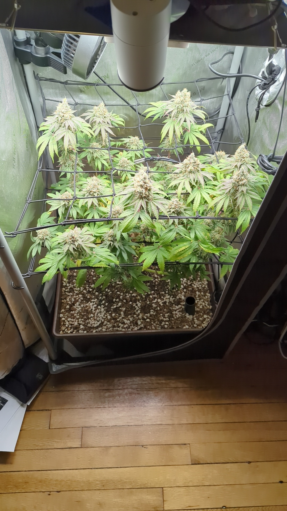
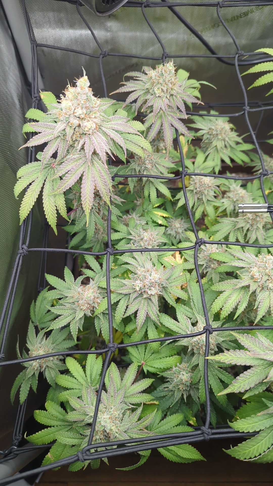
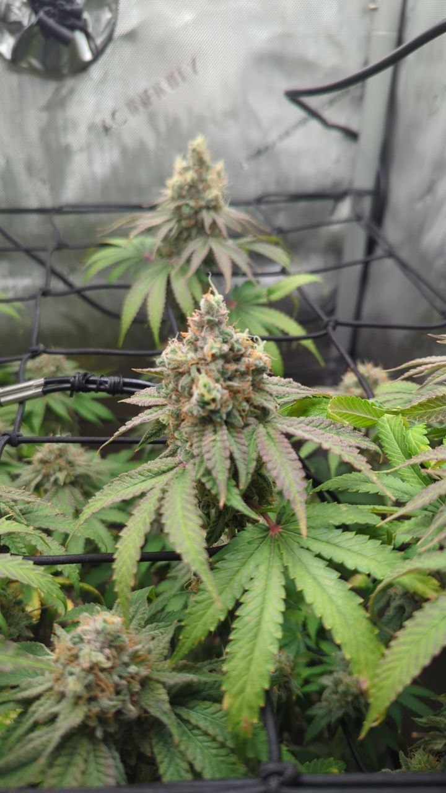
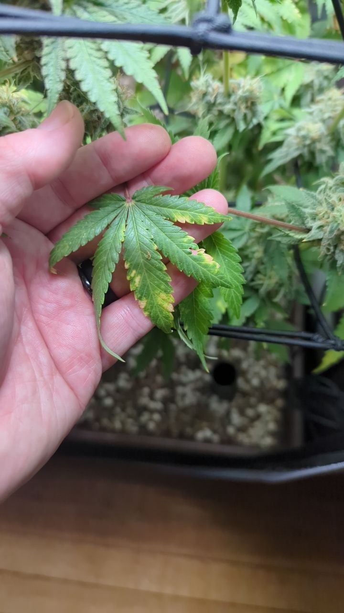
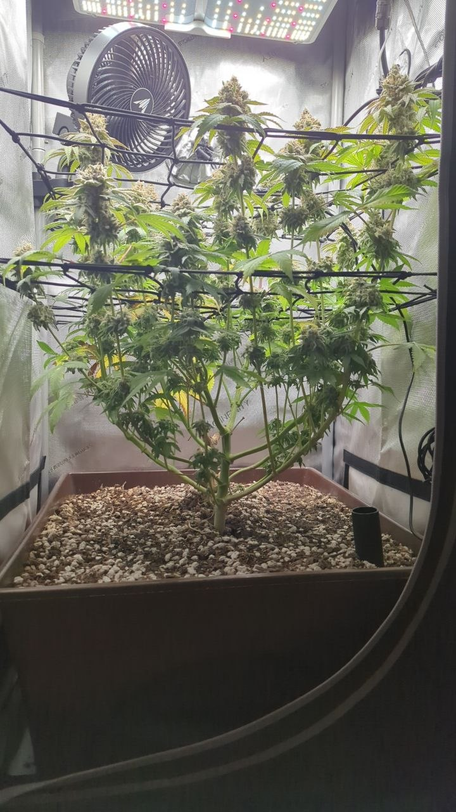
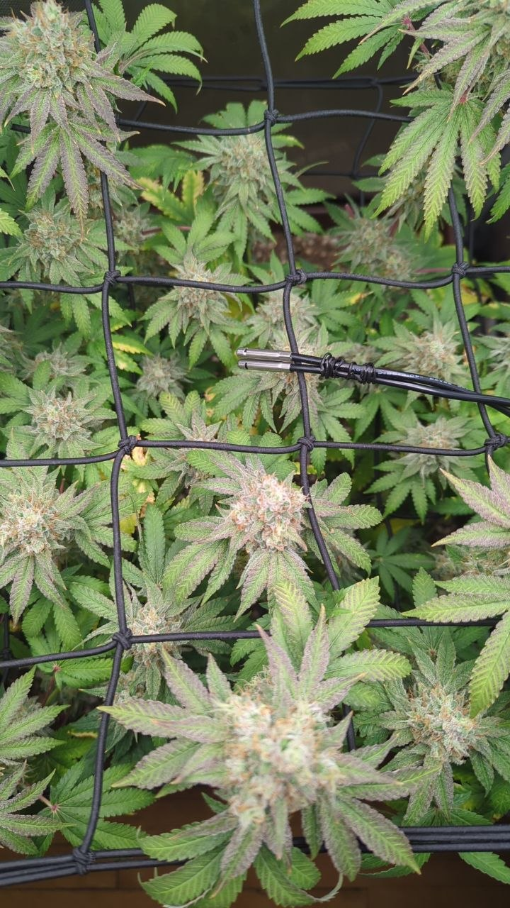
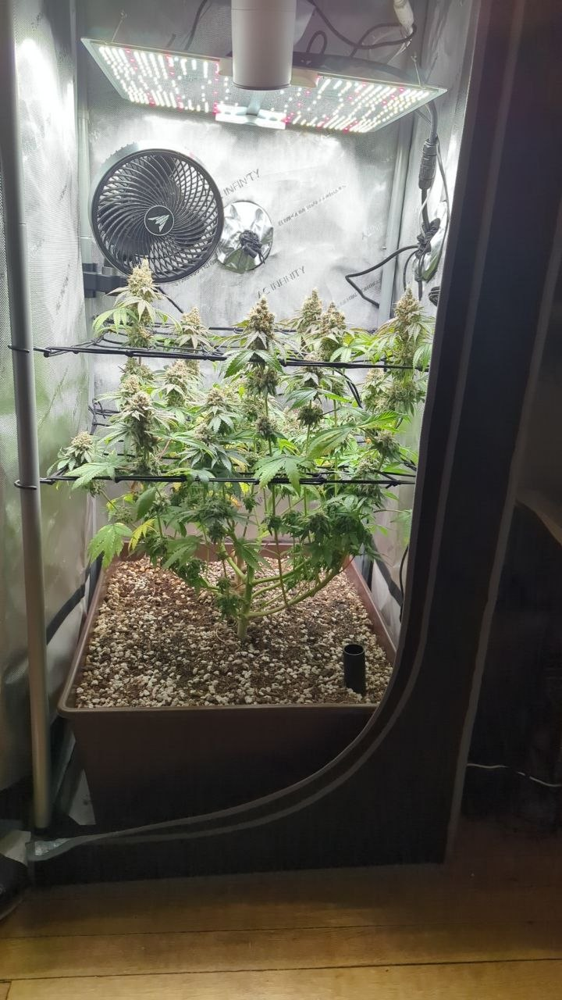
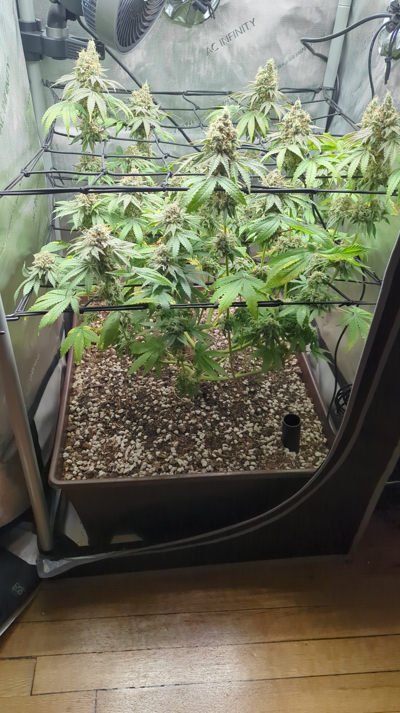
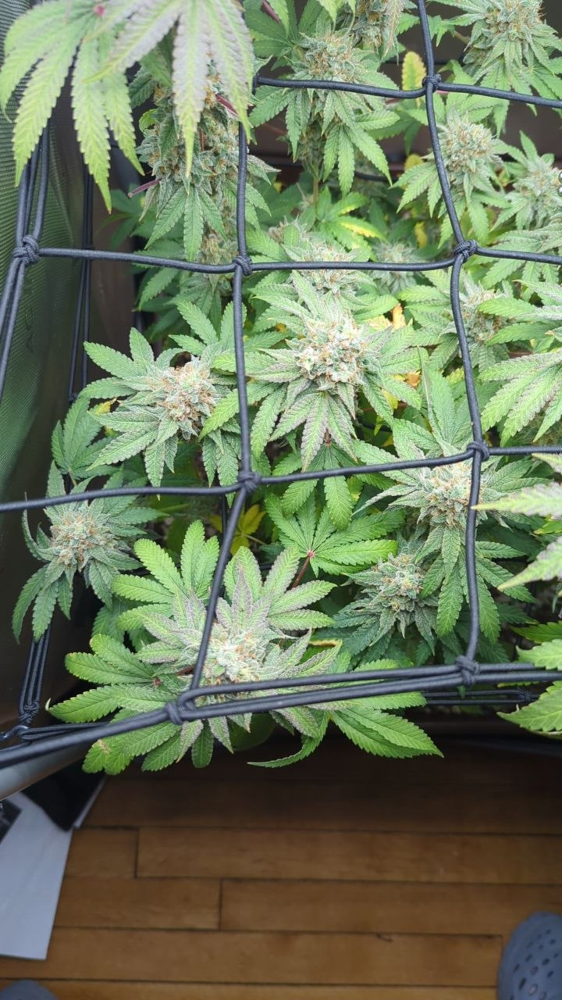
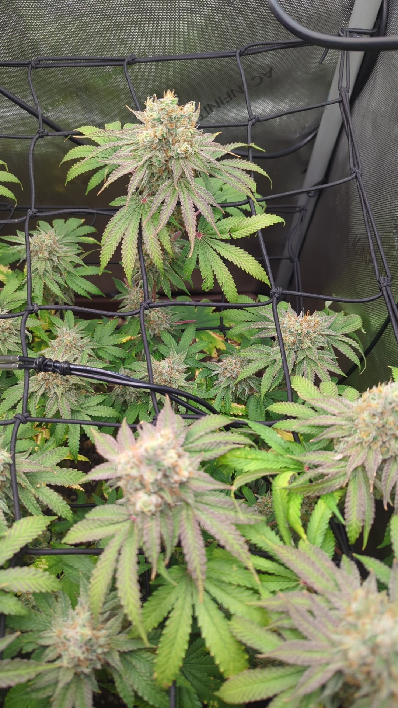
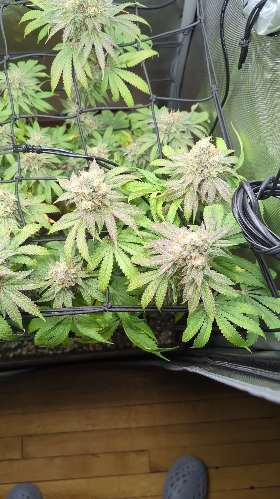
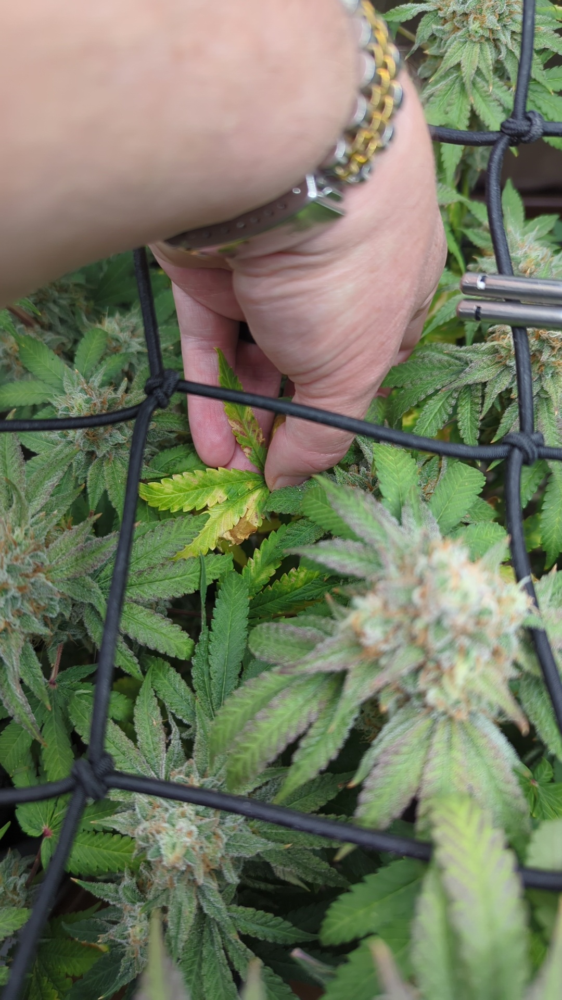
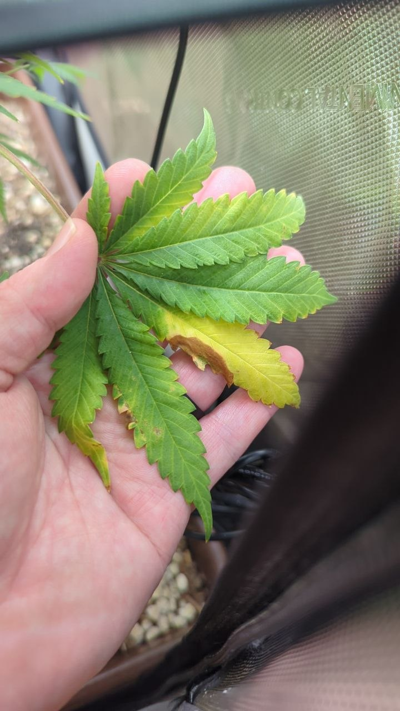
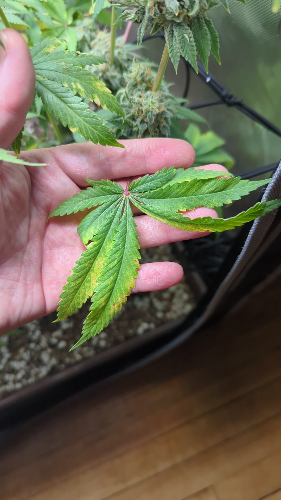
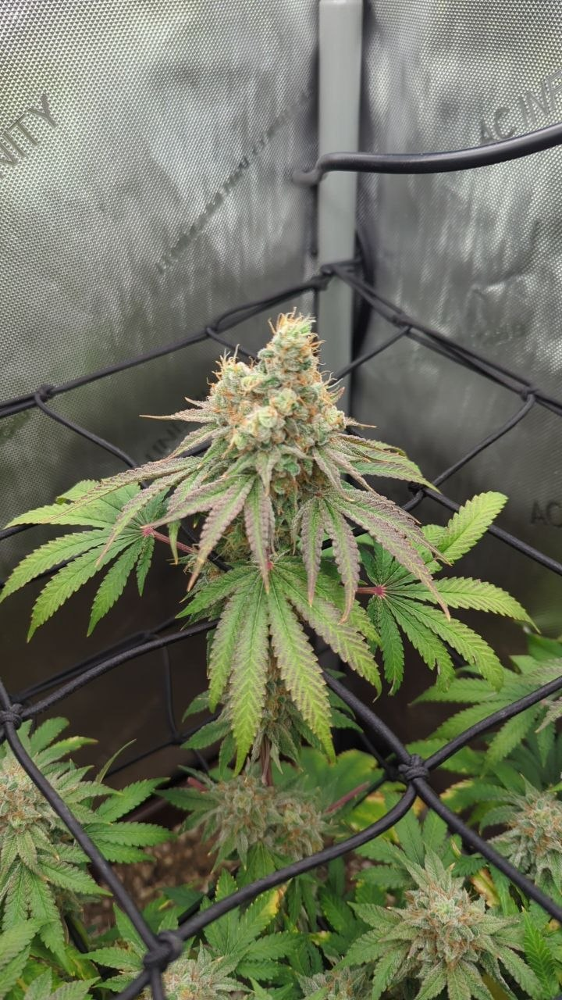
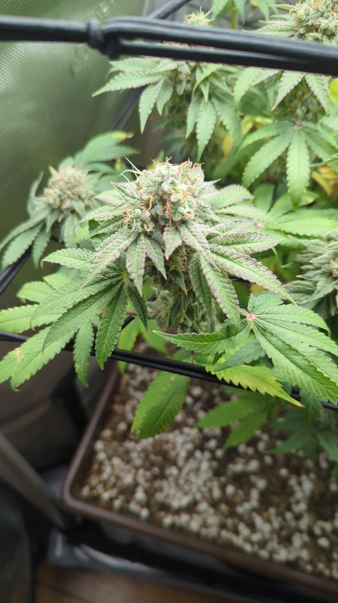
Every image on this page opens in the slideshow. Click any image, then use the arrows or swipe between all of them.
This is the most important section of the report. The 7/13, 7/19 and 8/1 reports each recorded the same gap: no trichome data. You closed that gap today.
Inspect the trichomes with a loupe or a USB scope at 60–100x. Look at the buds and the calyxes. Do not look at the sugar leaf tips. Below ~30x you cannot tell clear from cloudy. Then read the colors:
| Trichome color | Meaning | Effect |
|---|---|---|
| Clear | Too early | Thin, racy |
| Cloudy / milky | Peak THC | Full strength |
| Amber | THC changes to CBN | Sedative, body |
A common target for a balanced effect is ~70–90% cloudy with ~10–30% amber. Harvest earlier for a heady effect. Harvest later for a body effect. Source: KB 06 · Grow cycle — harvest timing06 · Grow Cycle — What's Normal WhenKnowing the stage prevents false alarms (e.g., late-flower leaf fade is normal, not a deficiency — see 16 · Senescence) and sets expectations. Timelines are typical photoperiod ranges; genetics vary.Covers: Stages · Photoperiod vs Autoflower (critical distinction) · Whole-plant & structural issues (not a leaf symptom) · Harvest timing (trichomes)GrowBuddy knowledge base · 06-grow-cycle.md.
You report the trichomes as "starting to mostly be milky." I read that phrase as more than half cloudy, with the balance still clear, and with little or no amber. That position sits below the ~70–90% cloudy band. It sits well below the 10–30% amber part of the target.
Conclusion: the plant is not ready today. Do not cut this week on the calendar alone.
Photos 13, 14 and 15 show the bud tips at the closest magnification of the set. Three details in them agree with a plant that is not yet ripe:
The 7/19 report gave "~1 week to harvest." That week ended on 7/26. The plant is now 11 days past that date and it is still not ripe. The reason is mechanical, not a small error:
Rule for the rest of this grow: the loupe decides, not the pistils and not the calendar.
I will not give you a firm date. The knowledge base records the reason as an open gap: no cannabis-specific data links the fade stage to a trichome percentage, and no data gives a normal rate of trichome change per day. Source: KB 16 · Senescence16 · Senescence (natural fade) — and how to tell it from a problemLate-life yellowing of a cannabis plant is often not a deficiency. It is senescence: an evolved, age-programmed shutdown in which the plant strips nutrients out of old leaves and moves them into the buds. The diagnostic problem is that senescence and a real deficiency share the same mechanism and the same look, so the…Covers: What senescence actually is (mechanism) · Timeline by plant age · Distinguishing senescence from the look-alikes · Deliberate "fade" / flushing — folklore vs evidence · Age-based decision rulesGrowBuddy knowledge base · 16-senescence.md.
An indicative range is 5 to 12 more days to reach the ~70–90% cloudy band. Treat that range as low confidence. Use this method instead of the number:
Pick your target now. Papaya Crush is an indica-leaning line. The breeder describes the effect as a happy onset that turns sedative. If you want that documented effect, aim at the later side: ~80% cloudy with ~20% amber. If you want a lighter head effect, cut at ~85–90% cloudy with almost no amber.
You did not state the magnification of the loupe. You did not state where on the plant you looked. Both change the answer. A reading from a sugar leaf tip runs ahead of the bud, because sugar leaf trichomes mature first. A loupe below ~30x cannot separate clear from cloudy at all. Please confirm both points at the next check.
| Signal | 8/1 (day ~59) | 8/6 (day ~64) | Trend |
|---|---|---|---|
| Trichomes | No data. Third report with the gap. | Grower loupe check: "starting to mostly be milky." First reading of the grow. | Gap closed |
| Harvest state | Decision blocked. | Decision made: not ready. ~5–12 days more, loupe-led. | Resolved |
| Foxtail spires | New. Pale spires at 2 top colas. | Larger and taller. Seen at the top-left cola, the top-right cola and in all 3 cola macros. | Worse |
| Purple color | New. On the sugar leaves and bracts of the top colas only. | Stronger. Now also on the blades of the fan leaves next to the colas. | Spread |
| Interior leaf yellowing | Closed as senescence. No leaf macro existed to check the pattern. | Reopened. Four leaf macros show a serration and margin pattern with tip necrosis. | Reopened |
| Bud size | Visibly larger than 7/19. | Slightly larger again. The gain over 5 days is small. | Up |
| Pests | None in 9 photos. | None in 16 photos. Clean at 5x digital zoom on two leaf macros. No stippling. No webbing. | Flat — OK |
| Mold, mildew, bud rot | None seen. No interior photo. | None seen. Photo 16 adds an under-canopy view. Bud bases still not imaged. | Flat — OK |
| Understory | Bare and larfy (from 7/19 cross-sections). | Confirmed bare and open in photos 2, 3 and 16. | Flat |
| Soil surface | Dry. Due for water. | Dry on the surface. Day 2 of the ~4-day cycle after the 8/4 water. Normal. | Flat — OK |
| Canopy temperature | No reading. Blocks 2 flags. | Still no reading. A probe appears in photos 5, 6 and 7. You gave no number. | Still open |
| Cola / bud site count | ~32–46. | ~32–46. Flat. | Flat |
One comparison I will not make. The 8/1 and 8/6 quadrant photos use different camera angles and different exposures. I therefore cannot compare overall canopy green level between the two sets with confidence. A colour shift of that kind needs the same frame and the same light. I record the count of yellow-margined leaves instead, because a count survives an exposure change.
Method. I counted distinct flowering tops in photo 1 and photo 16. I used the scrog squares as a scale. I cross-checked the count against the four quadrant photos and the center photo.
Why the range stays wide. Tops overlap and hide each other. The foxtail spires now make the count harder, not easier. A spire can split one top into what looks like two or three. This pushes the count up without adding bud mass. Track the trend across reports. Do not trust the absolute number.
For a real number: count the tops by hand when you cut, or count the occupied scrog squares.
I hold the 8/1 range and I do not raise it. Two facts pull in opposite directions and they cancel:
The cap is structural. Photos 2, 3 and 16 all show the same thing: the understory is open and bare, and the flowering mass sits in the top two net planes only. That limits the total. No amount of extra time changes it in this grow.
Methods used (triangulation, all three low confidence):
Weigh the harvest. Weigh it wet, then weigh it dry. Write both numbers in grow_context.md. That replaces this estimate with a fact for the next grow.
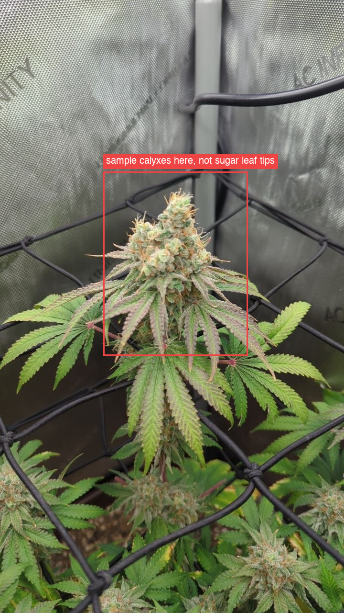
Your loupe reading places the plant below the target band. Read section 3 for the full analysis. The short version: "starting to mostly be milky" is not ~70–90% cloudy with ~10–30% amber.
Do not cut this week on the calendar. The plant is 8 days past the breeder figure of ~56 days. That figure is a breeder average, not a measurement of your plant. The loupe overrides the calendar.
The red box marks the correct sampling zone: the calyx surface of the bud. Do not sample the sugar leaf tips. Sugar leaf trichomes mature earlier than bud trichomes, so a sugar leaf reading tells you the plant is riper than it is.
Check every 2 days. Sample a top bud, a middle bud and a lower bud each time. Photograph each check.
Source: KB 06 · Grow cycle — harvest timing06 · Grow Cycle — What's Normal WhenKnowing the stage prevents false alarms (e.g., late-flower leaf fade is normal, not a deficiency — see 16 · Senescence) and sets expectations. Timelines are typical photoperiod ranges; genetics vary.Covers: Stages · Photoperiod vs Autoflower (critical distinction) · Whole-plant & structural issues (not a leaf symptom) · Harvest timing (trichomes)GrowBuddy knowledge base · 06-grow-cycle.md; strain file — Papaya CrushPapaya CrushBreeder: Bloom Seed Co. · Lineage: Papaya × Bolo Runtz · Type: indica-leaning hybrid · THC: ~25%Covers: Grow facts (sourced) · Diagnostic flags (sourced only) · Assumptions & to-verify (NOT established fact) · Grower notes (external report — r/BloomSeedCompany journal `1rncu6s`, retrieved via browser)GrowBuddy knowledge base · strains/papaya-crush.md.
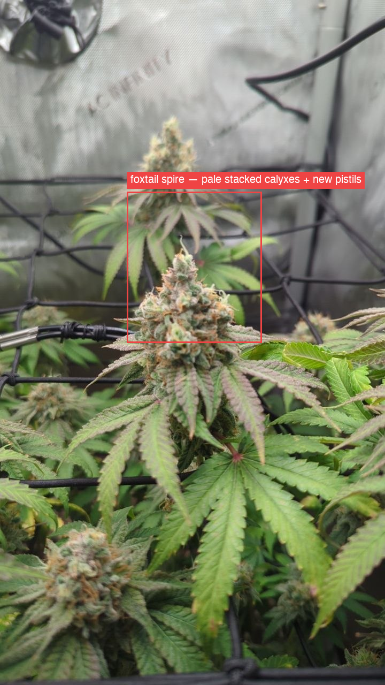
The 8/1 report opened this item at 2 top colas. Five days later the spires are taller and I can see them in more places: the top-left cola, the top-right cola, all 3 cola macros, and at canopy level in photo 1.
The knowledge base splits foxtailing into two causes. Stress foxtail appears only at the tops nearest the light. It looks irregular. The new growth is pale or bleached. It travels with other heat or light stress signs, such as tacoing and bleaching. The triggers are a canopy temperature above ~85–86 °F, or light that is too close or too strong. Genetic foxtail appears evenly across many bud sites. The plant shows no other stress sign. It is benign and it does not reduce potency or yield.
How this case scores now. The score moved slightly toward the benign side since 8/1:
I still cannot decide between the three, and the reason is the same as on 8/1. One measurement decides it. Measure the canopy temperature. No temperature reading exists anywhere in grow_context.md for the whole grow. This is the second report to ask. If the canopy runs below ~85 °F, stress foxtail is unlikely and you can ignore this item.
Consequence if it is stress foxtail: low, at this point. You cannot reverse a spire that already formed. You can only stop new ones, and the plant has 5 to 12 days left. Potency does not drop. The practical value of the measurement is for the next grow.
Also measure the PPFD at the two top colas. The last reading was just below 800, taken on 7/13.
Source: KB 03 · Environmental — foxtailing03 · Environmental Stress & WateringThese cause more "deficiency" misdiagnoses than actual deficiencies. Check here early.Covers: pH & nutrient lockout · Nutrient burn vs light burn vs heat (the big three look-alikes) · Light & heat · Temperature / humidity / VPD by stage · Watering: over vs under vs heat droop · Wind burnGrowBuddy knowledge base · 03-environmental-and-watering.md; KB 10 · Symptom index10 · Symptom Index (reverse lookup)Start here when you have a symptom and want candidates fast. Find the symptom, read the ranked causes, then open the linked file and confirm with the framework. Causes are listed most-likely-first for a typical grow.Covers: Yellowing · Tips & edges · Spots & color · Whole-plant / structural (not a leaf color) · Shape, posture, growth · Holes / eaten tissue (chewing damage — mostly outdoor)GrowBuddy knowledge base · 10-symptom-index.md.
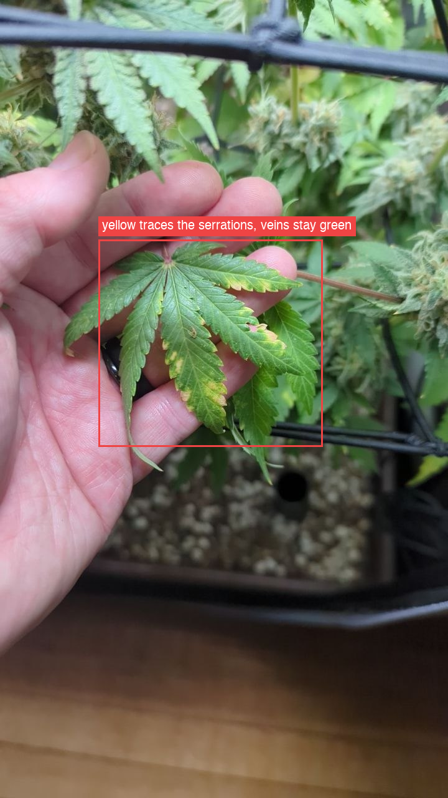
What changed. The 8/1 report closed this item. It called the yellowing plain senescence and removed it from the watch list. That decision used four age tests from the senescence chapter, and the plant passed all four. But the 8/1 set contained no single-leaf macro photo. The closure therefore rested on canopy-level frames only. Your four leaf macros are new evidence, and they do not support the closure. I reopen the item.
The pattern mismatch. The knowledge base states that natural senescence produces uniform whole-leaf yellowing, not just between the veins. Your four leaves do not show that. They show:
What that pattern matches. The deficiency chapter describes the potassium early tell in these words: before the edges burn, the yellowing traces the leaf serrations and makes a thin yellow outline around the margin. The later stage is burnt or yellow leaf edges and tips on older leaves, sometimes with spots. Your photos match both stages. The 7/13 report saw the same pattern on 3 leaves and called it the potassium early tell. That read was correct and 8/1 dropped it.
What I do not claim. I do not diagnose a potassium deficiency. Three points hold me back:
My read. A late-flower potassium draw-down sits on top of normal senescence. Confidence: moderate. This is not one or the other. The pattern is real and the age context is also real.
The action does not change. Do not feed potassium now. Do not flush. This is living soil in a no-till bed, and the plant is 5 to 12 days from the cut. The knowledge base is explicit: a living-soil plant senesces on its own, there is no leachable salt reservoir to flush, and the correct finish is to let it fade on water. A correction applied now cannot reach the buds in time, and it adds risk.
The value of this flag is for the next grow. Raise potassium earlier. Put more potassium in the flowering top dress, or add a potassium-rich amendment in week 4 to 5 of flower instead of week 6 and later. Also start recording pH.
Source: KB 02 · Deficiencies — potassium02 · Nutrient Deficiencies & ToxicitiesAlways run the framework first (pH/watering, then location). Fixes below assume a synthetic/bottled-nutrient grow; for living soil, see 07 (the remedy is amendments/teas, not a bottle).Covers: Mobility cheat sheet · Mobile nutrients · Immobile nutrients · Toxicities & overfeeding · Hard ruleGrowBuddy knowledge base · 02-deficiencies.md; KB 16 · Senescence16 · Senescence (natural fade) — and how to tell it from a problemLate-life yellowing of a cannabis plant is often not a deficiency. It is senescence: an evolved, age-programmed shutdown in which the plant strips nutrients out of old leaves and moves them into the buds. The diagnostic problem is that senescence and a real deficiency share the same mechanism and the same look, so the…Covers: What senescence actually is (mechanism) · Timeline by plant age · Distinguishing senescence from the look-alikes · Deliberate "fade" / flushing — folklore vs evidence · Age-based decision rulesGrowBuddy knowledge base · 16-senescence.md; KB 07 · Living soil07 · Organic / Living Soil / No-TillA living-soil grow is a different system from bottled-nutrient growing, and most generic diagnosis advice gives the wrong fix here. If the grow is living soil / no-till, read this before recommending anything.Covers: The core idea · How feeding/correcting works (and what NOT to say) · Diagnosis differences in living soil · Practical no-till setup & routine (real-world basics) · Practical rule for the diagnoserGrowBuddy knowledge base · 07-organic-living-soil.md.
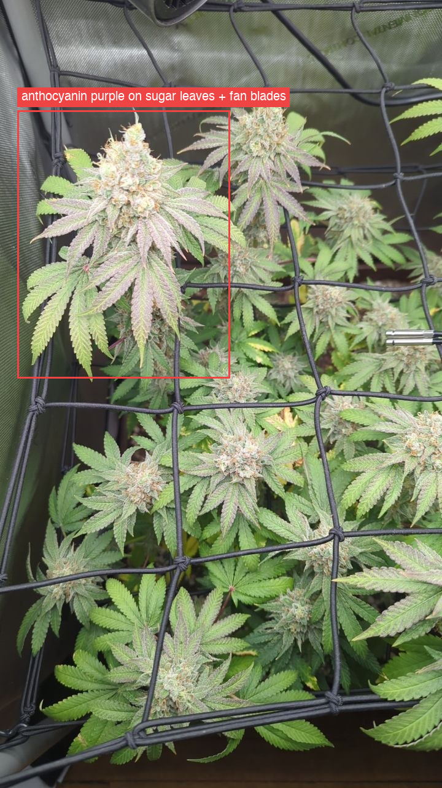
The 8/1 report opened this item. It found purple color on the sugar leaves and bracts of the top colas only. Five days later the color is stronger, and it now reaches the blades of the fan leaves next to the colas. The top-left region shows this most clearly. The 8/1 frames of the same cola do not show it.
This is anthocyanin. The knowledge base rule is that colour alone is benign. Late-flower purple is common. The environmental chapter lists cool nights as a trigger for anthocyanin in stems and leaves.
A sourced note on this line, and its limit. Strainpedia records that the Papaya parent shows subtle violet hues under cooler nights. That is a documented Papaya tendency. It is not confirmed for Papaya Crush. One grower journal for Papaya Crush reported no purple stems on their run. That is a single data point and it is not conclusive.
The tension worth your attention. Two of the flags in this report point at opposite temperatures. Stress foxtail needs a canopy above ~85 °F. Anthocyanin purple points at cool nights. Both cannot be true at one steady temperature. A large difference between day and night temperature explains both at once. The breeder statement for this line is direct: keep the environment as stable as possible. So the day-night swing is worth measuring, and not only the peak.
Measure this: the canopy temperature with the lights on, and the tent temperature 2 hours after the lights go off. Give me both numbers.
Also still open from 8/1: take one photo in neutral light. Use the tent door light or the phone flash. Do not use the grow light. The LED distorts purple and green.
Source: KB 01 · Diagnosis framework01 · Diagnosis FrameworkThe method for turning "something looks off" into a calibrated diagnosis. Work the steps in order; do not jump to a nutrient name from leaf color alone.Covers: Step 0 — Gather context (decides most cases) · Step 1 — Rule out pH / lockout and watering FIRST · Step 2 — Localize the symptom (mobile vs immobile) · Step 3 — Characterize the pattern · Step 4 — Disambiguate look-alikes · Step 5 — Output: diagnosis, confidence, assumptions, sourcesGrowBuddy knowledge base · 01-diagnosis-framework.md; KB 03 · Environmental03 · Environmental Stress & WateringThese cause more "deficiency" misdiagnoses than actual deficiencies. Check here early.Covers: pH & nutrient lockout · Nutrient burn vs light burn vs heat (the big three look-alikes) · Light & heat · Temperature / humidity / VPD by stage · Watering: over vs under vs heat droop · Wind burnGrowBuddy knowledge base · 03-environmental-and-watering.md; strain file — Papaya CrushPapaya CrushBreeder: Bloom Seed Co. · Lineage: Papaya × Bolo Runtz · Type: indica-leaning hybrid · THC: ~25%Covers: Grow facts (sourced) · Diagnostic flags (sourced only) · Assumptions & to-verify (NOT established fact) · Grower notes (external report — r/BloomSeedCompany journal `1rncu6s`, retrieved via browser)GrowBuddy knowledge base · strains/papaya-crush.md.
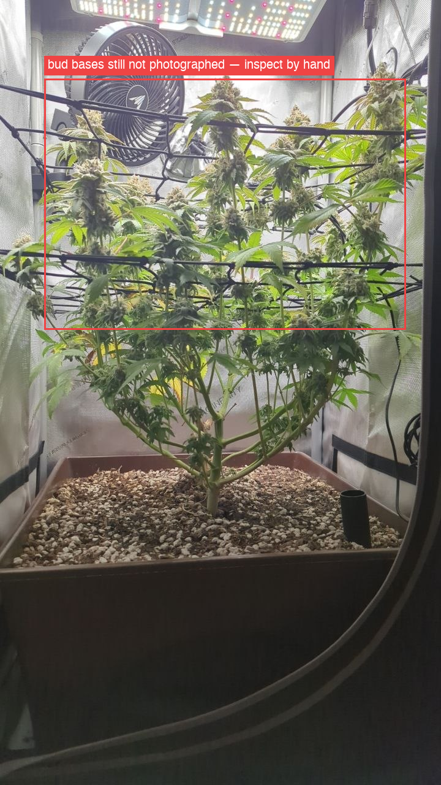
Credit first. Photo 16 is a real improvement on 8/1. It looks up from below the net. It shows the understory, the bare lower structure, and the undersides of the top-plane buds. All of it reads clean. The 8/1 set had nothing equivalent.
The gap that stays. No photo opens a cola and shows its base. Botrytis starts inside a dense bud, at the base, where the air does not move. It does not start on the outside. Photo 16 shows the outside of the bud from a new angle. It does not show the inside.
Nothing in the 16 photos says the plant has bud rot. Every visible surface is clean at every magnification I checked. But "clean on the outside" stays a weak statement about botrytis.
The risk is at its peak now, and it will stay at its peak for 5 to 12 more days. The buds are at their densest. The plant runs past its finish date. Density is a precondition for rot. Your understory airflow looks good in photo 16, and that helps.
Do this by hand, this week, and again before you cut.
Source: KB 05 · Diseases — bud rot / botrytis05 · Diseases (Mold, Rot, Mildew)Fungal problems are mostly an environment story: humidity, temperature, and airflow. Prevention beats treatment because by the time buds are affected, that material is usually lost.Covers: Bud rot / Botrytis (the dangerous one in flower) · Powdery mildew (PM) · Leaf septoria (yellow leaf spot) — outdoor · Root rot (Pythium) · Prevention (covers all three)GrowBuddy knowledge base · 05-diseases.md.
This is the largest hole in the record, and it is now the reason two flags stay undiagnosed. The file grow_context.md contains no temperature reading and no humidity reading for the entire grow. Not one, across ~100 days.
A probe tip appears in photos 5, 6 and 7. So a meter is likely present in the tent. You did not give me a number from it.
What the numbers would settle:
Send three numbers: canopy temperature with lights on, tent temperature 2 hours after lights off, and relative humidity. I will fold them into the next report and close what they close.
Source: KB 03 · Environmental — temperature, humidity, VPD by stage03 · Environmental Stress & WateringThese cause more "deficiency" misdiagnoses than actual deficiencies. Check here early.Covers: pH & nutrient lockout · Nutrient burn vs light burn vs heat (the big three look-alikes) · Light & heat · Temperature / humidity / VPD by stage · Watering: over vs under vs heat droop · Wind burnGrowBuddy knowledge base · 03-environmental-and-watering.md; KB 05 · Diseases05 · Diseases (Mold, Rot, Mildew)Fungal problems are mostly an environment story: humidity, temperature, and airflow. Prevention beats treatment because by the time buds are affected, that material is usually lost.Covers: Bud rot / Botrytis (the dangerous one in flower) · Powdery mildew (PM) · Leaf septoria (yellow leaf spot) — outdoor · Root rot (Pythium) · Prevention (covers all three)GrowBuddy knowledge base · 05-diseases.md.
No photo of the 16 shows a pest. I checked the four leaf macros at 5x digital zoom. I found no stippling, no webbing, no eggs, no frass and no insects. The bud surfaces in the three cola macros are clean.
This grow had confirmed spider mites on 6/9. You treated them with Green Cleaner in five rounds through 6/19. No report since 6/22 has found a mite.
The stated limit: all four leaf macros show the upper leaf surface. Mites live on the underside. So this clean result is weaker than it looks. It matches every check since 6/22, which is why the item stays green and not amber.
Source: KB 04 · Pests04 · PestsMost pests are easiest to catch on leaf undersides and in new growth; a jeweler's loupe or USB microscope (60–100x) is essential for the microscopic ones. Early signs: stippling/speckling, curled or twisted new growth, sticky residue, webbing, or tiny moving dots.Covers: Spider mites (most common, most feared) · Broad mites & russet mites (microscopic, often misdiagnosed) · Thrips · Fungus gnats · Aphids · WhitefliesGrowBuddy knowledge base · 04-pests.md.
You water about every 4 days. You watered on 8/4. Today is day 2 of that cycle. The soil surface reads dry in photos 1, 2, 3, 15 and 16. A dry surface on day 2 of a 4-day cycle is normal, and it is not a flag.
No photo shows droop. No photo shows claw. No photo shows wilt. The leaf posture is flat and normal across all 16 shots.
Method note. A surface photo is a weak moisture test. Use your finger 2 inches down, or lift the bed and judge the weight. Do that before the next water.
One recording gap. You did not state the volume of the 8/4 water. You also did not state whether you fed it from the top or the bottom. The change log for the earlier waterings records both. Please add them.
Source: KB 03 · Watering03 · Environmental Stress & WateringThese cause more "deficiency" misdiagnoses than actual deficiencies. Check here early.Covers: pH & nutrient lockout · Nutrient burn vs light burn vs heat (the big three look-alikes) · Light & heat · Temperature / humidity / VPD by stage · Watering: over vs under vs heat droop · Wind burnGrowBuddy knowledge base · 03-environmental-and-watering.md; KB 07 · Living soil07 · Organic / Living Soil / No-TillA living-soil grow is a different system from bottled-nutrient growing, and most generic diagnosis advice gives the wrong fix here. If the grow is living soil / no-till, read this before recommending anything.Covers: The core idea · How feeding/correcting works (and what NOT to say) · Diagnosis differences in living soil · Practical no-till setup & routine (real-world basics) · Practical rule for the diagnoserGrowBuddy knowledge base · 07-organic-living-soil.md.
These are inferences, not facts. I list them so you can correct any one of them.
The knowledge base records these gaps itself. They are the reason section 3 gives a range and not a date.
The plant is healthy and it is close to the finish, but it is not ready. That is the headline, and your loupe gave it to me. Five days moved the plant forward. The buds grew a little. The frost stayed heavy. No pest, no mold, no powdery mildew and no bud rot appears in any of the 16 photos.
This report closes the biggest gap in the record and opens a smaller one. Three reports in a row asked for trichome data. You gave it. The harvest decision is no longer blocked, and the answer is "wait 5 to 12 more days, and let the loupe decide." In exchange, one earlier decision proved wrong. The 8/1 report closed the interior leaf yellowing as plain senescence. Your leaf macros show a serration-and-margin pattern that senescence does not produce. I reopened that item. The action does not change: no feed, no flush, water only. The value is for the next grow.
Two items got worse and both need the same missing number. The foxtail spires grew. The purple color spread onto the fan leaves. Neither is diagnosed, and neither can be, because this grow has never recorded a temperature. The two flags even point at opposite temperatures, which makes a day-night swing the most interesting thing to measure. Three numbers would resolve most of it.
The one real risk is one you cannot see in a photo. The buds are at peak density and the plant runs past its finish date. Botrytis starts at the bud base, inside. Photo 16 improved the coverage and showed clean bud undersides and good understory airflow. It did not show a bud base. Open the canopy with your hand this week, and do it again before you cut.
grow_context.md.{kind=link}
{kind=link}
{kind=link}
{kind=link}
{kind=link}
{kind=link}
{kind=link}
{kind=link}
{kind=link}
{kind=link}
{kind=link}
{kind=link}
{kind=link}
{kind=link}
{kind=link}
{kind=link}